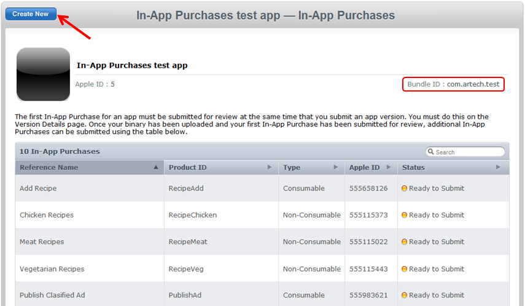

How to configure In-App Purchases in an iOS application
GeneXus-generated Smart Device applications allow including the In-App Purchase functionality through the Store API. However, some specific platform configurations need to be performed beforehand, in order to make the functionality work. Below is a list of configuration requirements when working with iOS applications. 1. Enable In-App Purchases for the App ID In the iOS Provisioning Portal inside the iOS Dev Center, check that In-App Purchases are enabled for the application App ID. 2. Create your application in the iTunes Connect portal. The Bundle ID configured for the application must have In-App Purchase enabled, as mentioned in the previous step; this value should be configured in the iOS Bundle Identifier property in the Smart Device application main object in GeneXus. Next, select the option labeled Manage In-App Purchases. 3. Indicate all the In-App Purchases products that will be available for the application. You can add as many as you want using the "Create New" button. iOS Store Kit Framework allows selecting five different kinds of products. In GeneXus applications, only Consumable and Non-Consumable products are supported for the moment (GeneXus X Evolution 2 Upgrade #2). Check the iOS In-App Purchases documentation and iTunes Connect documentation for details on each product type and how to define them.  4. The last step is to Submit the In-App Purchases products with the application binaries for review. In the main page of the application in iTunes Connect, go to the Current Version section, which should be set to Prepare for Upload status, and select "View Details". In the page displayed you will find an In-App Purchases section.
Selecting the "Edit" option will display a list of all In-App Purchases products, for you to choose those that will be submitted for review with the application version.
|

| Backlinks | |
| In-App Purchase Sample - Classified Ads | In-App Purchase Sample - My Kitchen |